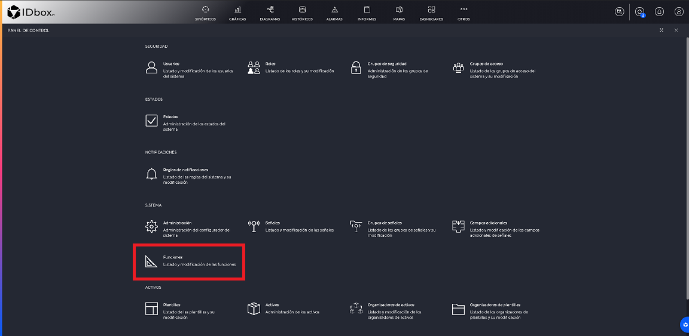
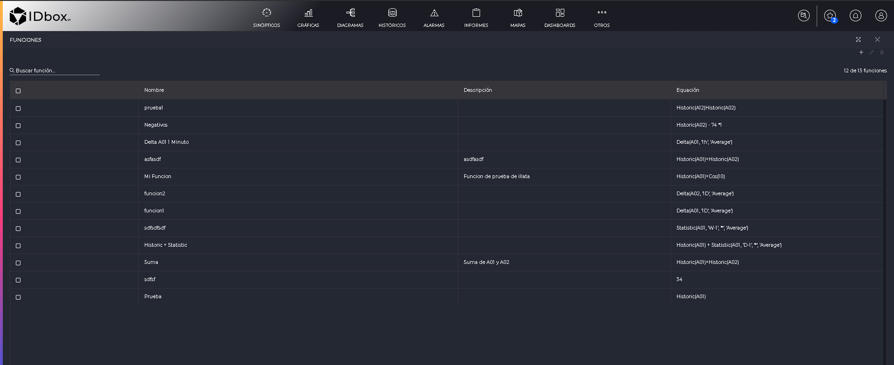
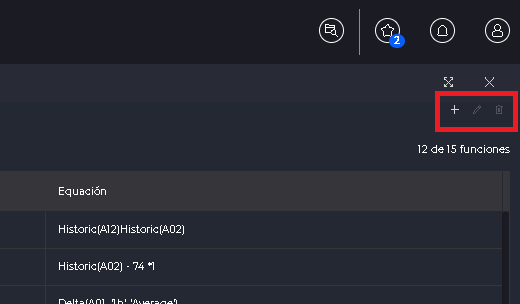
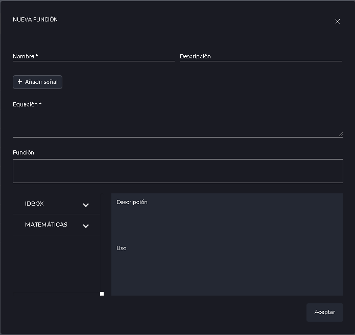
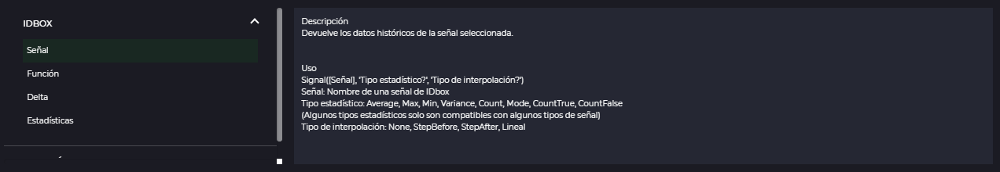

Functions
- 1 Introduction
- 2 Function management
- 3 Editing functions
- 3.1 Formulas
- 3.1.1 IDboxRT formulas
- 3.1.2 Mathematical formulas
- 3.1 Formulas
1. Introduction
This section will explain how to create, edit or delete functions.
2. Function management
The “Functions” section can be accessed from the control panel.

In it we will be able to see a list of all the functions available to us.

At the top right we will have buttons to create, edit or delete functions.

Pressing the delete button will delete the selected functions.
Clicking on create or edit will open the modal window for editing functions.
3. Editing functions

All the fields shown in the window will be explained below:
- Name (Required field): This will be the name by which the function will be identified in the different lists and documents of the application.
- Description: Description of the function.
- Add signal: Allows to add a new signal to the equation.
- Equation (Required field): It will be the basis of the function, where it is indicated how the values will be calculated. For a function to be valid only formulas as specified below and mathematical operators (+, -, /, *) can be added. If the function is invalid, this field will be marked in red and an informative message will be displayed.
- Function: Panel where a preview of the equation written in the previous field will be shown.
In the calculation of the functions the result will always be taken as an analog signal.
3.1 Formulas
Below the “Function” panel we can see a list of the available formulas. These are divided into two parts, which will be discussed later.

On the right side of the list we can see another panel with a description of what each calculation does, as well as a sample of how to use it. In addition, with the IDboxRT formulas you will be able to see in the “Usage” section the different values that each parameter can take.
3.1.1 IDboxRT formulas
IDboxRT formulas are calculations based on operations on IDbox signals. To add a new formula of this type we will have to double click and a window will open where we will have to select each parameter. Clicking “OK” in the window will add the calculation to the equation.
3.1.2 Mathematical formulas
Mathematical formulas are calculations that do not require the use of IDbox signals, although IDbox calculations can be used as a parameter for mathematical calculations.
Acos(Signal([Signal2], ‘Average’, ‘StepBefore’))
To add a mathematical calculation we will have to double click and it will be added directly to the equation, where we will have to replace each parameter by the desired value.